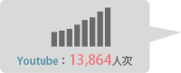
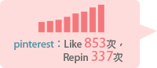
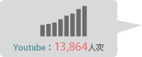
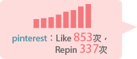

和城市一起走過的路，醞釀強大的設計力量
因為2016臺北市申請世界設計之都的幸福願景，我們 不只向前走，也開始回頭細數、深刻探究臺北的過去， 回味人與環境互動下，獨特的光陰故事。
漸漸的我們長大，城市也隨著我們悄悄蛻變、不斷提昇 、不斷進化。我們體會，生活的美好總是出現在不經意 之處，平日漫步的臺北街頭有了更有趣的風景。城市的 角落，正醞釀著強大的設計力量。
有304人加入「城市街頭風景大發現」的行列，記錄下557張臺北街頭之美。更有2,254位網友，以10,908次行動支持自己喜歡的街頭風景。
與《文青相機》合作臺北世界設計之都特別版App，截至2013/2/10下載總次數達17,005；更新次數 180,629。
See more，看更多活動成果！

因為設計之都，我們一起看見了臺北的設計靈魂。
周遭流動的風景不再是理所當然，我們用更好奇的眼光觀察、記錄這個世代 日常現象彷彿也有了新的意義，我們更熱切的與其他人分享。向世界展現臺北市對 於申辦世界設計之都的熱情。
 


